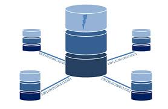

Adatbázis rendszerek
Tantárgy tematikája:
- Adatkezelés és adatbáziskezelés alapfogalmai
- Fileszervezési módszerek, B-fa index
- Adatbázis architektúra
- Adatmodellek, SDM modellek áttekintése
- ER adatmodell
- EER adatmodell
- Hierarchikus adatmodell
- Hálós adatmodell áttekintése
- Hálós adatmodell műveleti része
- Relációs adatmodell, relációs struktúra és integritási feltételek
- Relációs adatmodell műveleti része, relációs algebra
- Az SQL szabvány relációs kezelő nyelv bemutatása, a DDL, DML és a SELECT utasítások használata
- Az SQL92 szabvány további elemei
- Az adatmodellezés problémái, adatbázis fejlesztési módszertanok
- DBMS termékek SQL implementációinak áttekintése

Forrás: https://www.iteachrecruiters.com/blog/a-tour-of-10-most-common-database-systems-for-recruiters/